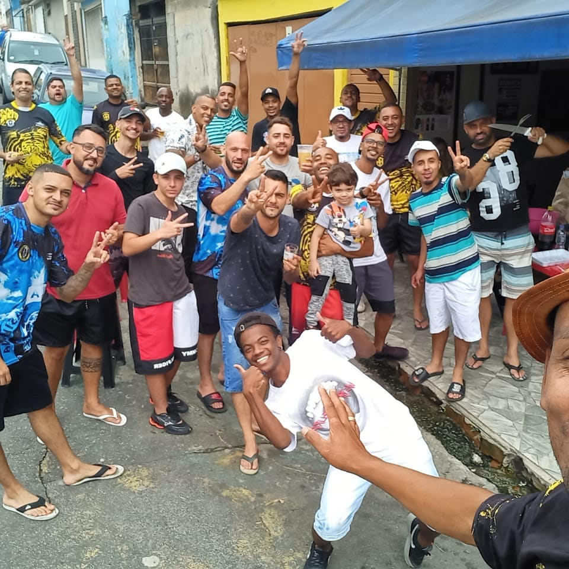
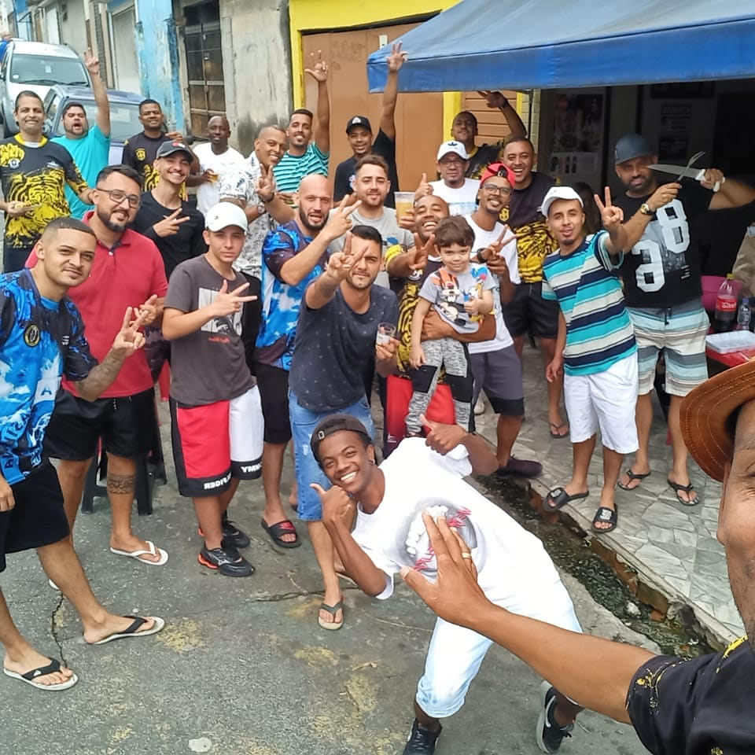

Brazukas Futebol clube
Fundação: 21 de abril de 2005
Campo: Campo do Brisamar FC, bairro Brisamar, Vila Velha, Espírito Santo.
Uniforme: Camisa amarela com uma faixa horizontal azul, calção e meiões azuis.
Rede social: Facebook do Brisamar
História
O Brisamar Futebol Clube é um time de várzea que representa o bairro de mesmo nome, Brisamar, localizado na cidade de Vila Velha, Espírito Santo. O clube foi fundado dia 21 de abril de 2005, no feriado de Tiradentes, pelos moradores do bairro.
De acordo com uma apresentação oficial do time enviada ao VárzeaPédia, o intuito era de apenas criar um meio de lazer para aquele grupo de vizinhos e amigos. No entanto, com o passar do tempo, o time foi ficando mais estruturado e organizado. O Brisamar começou a disputar campeonatos de futebol amador, chamando a atenção de outros adeptos.
Elenco
O maior time de futebol amador do Estado de São Paulo,

Sede
Um marco importante para história do Brazukas FC foi a fundação da sede do time, Bar da Tia, hoje localizada no bairro em São Paulo, SP, que conta com um espaço para festa e um campo de futebol.
 
